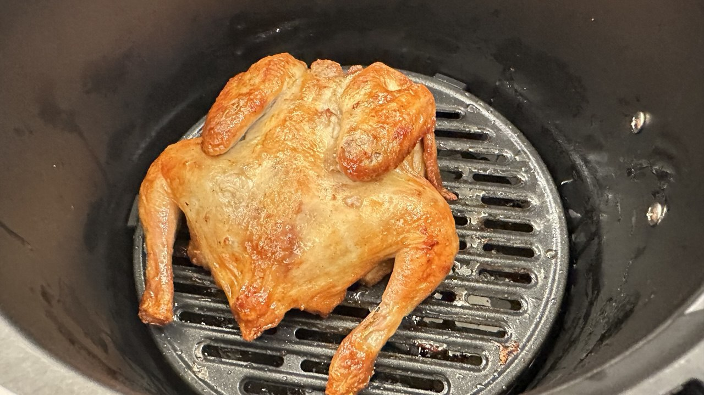
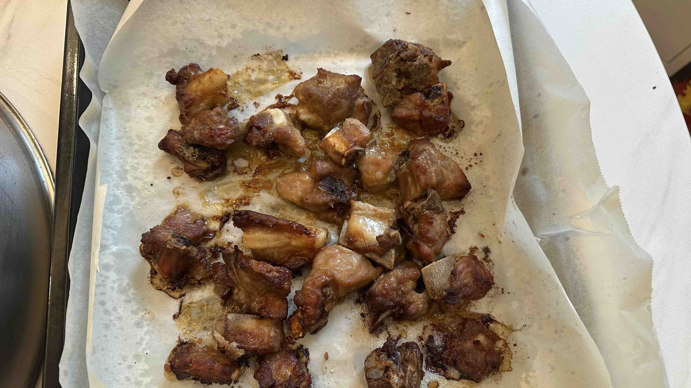

Cocinando con una Air Fryer | Original, traducido por IA
La freidora de aire se ha convertido en mi herramienta de cocina favorita recientemente. Compré la freidora de aire Midea KZE5004 por alrededor de 126 CNY.
He preparado los siguientes platos y la experiencia ha sido muy agradable.
El último plato mostrado aquí no se cocinó en la freidora de aire, eran solo fideos hechos en una olla. Como es uno de mis intentos recientes de cocina, lo he incluido aquí también.
Si usas con frecuencia una herramienta de cocina después de adquirirla, puedes decir que realmente te gusta.
La freidora de aire ha reemplazado a mi horno eléctrico. En realidad, me gustaría usar ambos, pero mi esposa no lo permite: se queja de que ocupa mucho espacio y desordena el comedor y la cocina, que ya están llenos de muchos utensilios y vajillas.
Esto es razonable, ya que mi esposa me visita los fines de semana y no quiero que el lugar se sienta apretado. Si viviera solo permanentemente, volvería a colocar el horno eléctrico en el comedor.
Hay algunos beneficios de tener ambos electrodomésticos. Primero, puedes usar el horno eléctrico y la freidora de aire simultáneamente, especialmente al cocinar varios platos. Segundo, puedes comparar las diferencias sutiles en el sabor al preparar los mismos ingredientes en ambos. Tercero, es un desperdicio dejar un buen producto sin usar.
Usar solo una herramienta todo el tiempo puede ser aburrido, así que probé la cocina tradicional en la estufa e hice fideos en una olla. Recuerdo que en 2020 y 2021 solía cocinar platos similares en casa de mis padres y a veces hacía videos cortos sobre ellos.
En aquel entonces, cocinar parecía sencillo. Pero ahora, como no cocino tan seguido, incluso usar la freidora de aire a veces me parece una molestia, y me dan ganas de pedir comida a domicilio cuando estoy ocupado. Como resultado, no he usado una sartén ni una olla mucho últimamente, así que estoy contento de haberlo hecho hoy.
Originalmente compré paquetes de bolas de carne para cocinar en la freidora de aire, pero ahora también quiero probarlas en una olla.
Los fideos quedaron deliciosos. Usé mucha agua para hervir los ingredientes, saqué el exceso de agua y luego agregué el sobre de condimentos a la olla. ¡El plato final estuvo excelente!

Fuente: Captura propia

Fuente: Captura propia

Fuente: Captura propia

Fuente: Captura propia

Fuente: Captura propia

Fuente: Captura propia

Fuente: Captura propia
Cocina
2024.12.29
-
Cocinar para ti mismo es simple. Usa aceite para saltear porque tiene un punto de ebullición más alto que el agua, lo que ayuda a calentar los alimentos de manera más efectiva.
-
Es fácil hacer un plato con carne, verduras, chile, ajo y jengibre.
-
Un picador de verduras es una herramienta muy útil. Puede picar verduras en cubos, rodajas o tiras, y se puede usar para tareas como cortar papas en rodajas o hacer gránulos pequeños de pimientos.
-
Hacer sopa es fácil con una olla eléctrica. Agrega los ingredientes, sazona con sal, programa el temporizador y deja que se cocine.
-
La sopa con ñame chino es genial porque se cocina fácilmente en la sopa y la hace espesa. Las zanahorias, el rábano y los tomates también son buenos ingredientes para esta sopa.
-
Un horno de asar se puede usar para hacer tartas de huevo, cordero, res, cerdo, salchichas, champiñones y más. Para la carne, ajusta la temperatura a 200°C y cocina durante unos 20 minutos.
-
Para cocinar al aire libre, necesitarás fuego. Las hojas secas se pueden usar para encender el fuego. Encuentra un recipiente para sostener la comida mientras se cocina, o incluso usa una teja como olla improvisada.
-
Una arrocera también se puede usar para calentar alimentos, no solo arroz. Sin embargo, ten en cuenta que las verduras tienden a soltar agua, lo que puede hacer que el arroz quede demasiado húmedo. Agrega solo un poco de agua si estás cocinando verduras en la arrocera.
-
Un robot de cocina es una herramienta conveniente para hacer platos. Simplemente agrega los ingredientes y deja que el robot se encargue del revolviendo.
-
Debemos entender cuánto tiempo necesita cada ingrediente para saltearse. El brócoli requiere más tiempo, mientras que los champiñones y la carne necesitan menos tiempo.
-
Si los cocinamos juntos, los diferentes tiempos de cocción harán que algunos ingredientes queden demasiado cocidos y otros poco cocidos. El orden en que agregamos los ingredientes a la sartén importa.
-
Debemos minimizar el lavado de la olla entre platos y podemos saltear algunos alimentos juntos.
-
Podemos aplicar el mismo proceso o función a objetos similares o elementos con las mismas características. Esto aplica tanto para cocinar como para programación.
-
Los ingredientes que se calientan en un horno de asar pueden ser cubiertos con harina de maíz y salsa de soya ligera. También es aceptable usar jugo de frutas para marinar, como jugo de limón, naranja o manzana.
-
Cortamos la carne u otros ingredientes en trozos pequeños para que se calienten de manera más efectiva en la olla. Por lo tanto, es diferente prepararse para hacer sopa, que puede aceptar trozos más grandes de ingredientes.
-
Lo más importante de cocinar es cocinar completamente los alimentos para que sean seguros para comer.
-
Usar un horno de asar en lugar de una vaporera eléctrica significa que no involucra agua para calentar los alimentos, lo que los seca.
-
Un mortero es una gran herramienta para triturar ajo.
-
No uses demasiada sal, especialmente si los ingredientes ya están cubiertos con salsa de soya.
-
Por lo general, la carne no necesita lavarse nuevamente. La gente tiende a lavar demasiado los ingredientes; no es necesario limpiarlos exhaustivamente con agua. Solo debemos asegurarnos de que los ingredientes estén frescos.
-
El papel pergamino es mejor que el papel aluminio porque no se pegará a la superficie de cocción.
-
Ten cuidado con los ingredientes que contienen mucha agua, como los pimientos. Revolverlos con carne puede liberar agua, bajando la temperatura del salteado y ralentizando el proceso de cocción.
 Fuente: Captura propia
 Fuente: Captura propia
Fuente: Captura propia